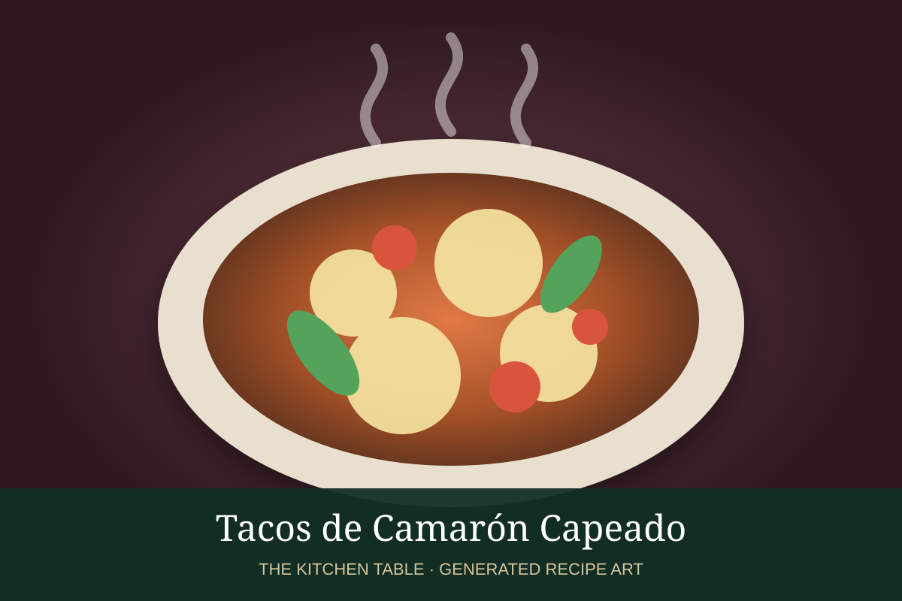

← Back to all recipes
SEAFOOD · MEXICAN
Tacos de Camarón Capeado
Shrimp in a light, crisp capeado batter with cabbage, crema, lime, and salsa verde.
35 minMakes 10 tacos

Photo: Muy Delish
Ingredients
- 1 1/2 lb large shrimp, peeled and deveined
- 3/4 cup flour
- 1/4 cup cornstarch
- 1 egg
- 3/4 cup cold sparkling water or beer
- 1 tsp salt
- Neutral oil, for frying
- 10 corn tortillas
- Shredded cabbage
- Mexican crema
- Salsa verde
- Lime wedges
Preparation
- Whisk flour, cornstarch, egg, cold liquid, and salt into a light batter.
- Heat oil to 350°F.
- Dip shrimp in batter and fry in batches until crisp and just cooked, 2 to 3 minutes.
- Drain briefly.
- Serve in tortillas with cabbage, crema, salsa verde, and lime.